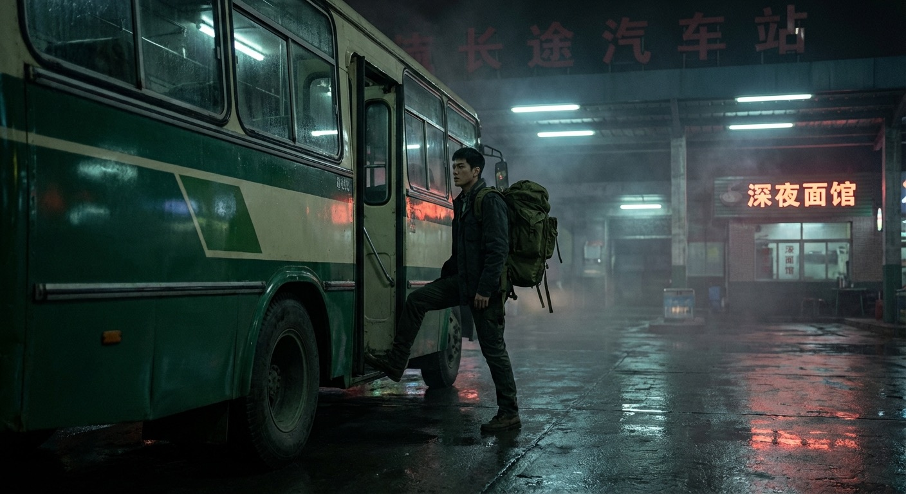
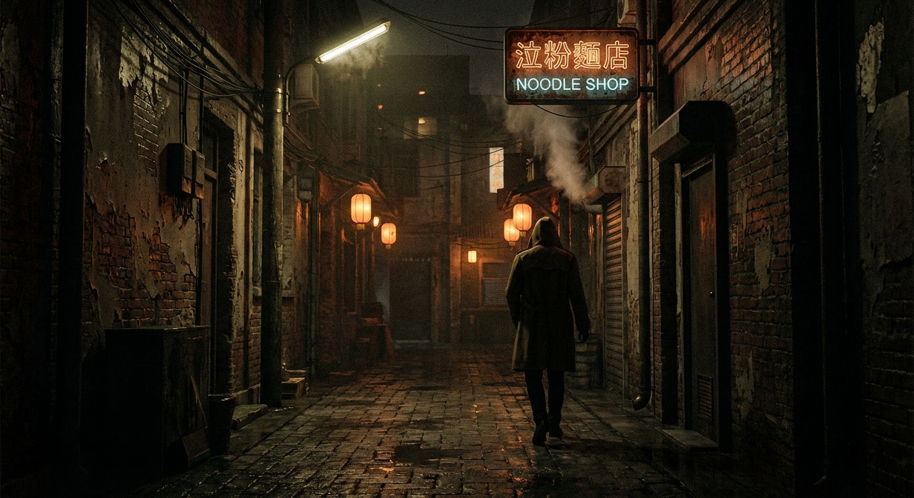

— 第一章 · 猛虎归来 —
临海市，深夜十一点。
一辆破旧的绿皮大巴在长途汽车站缓缓停下，车门打开，走下来一个身形挺拔的年轻男人。
他叫陈六合。穿着一件洗得发白的军绿色T恤，脚上一双磨得不成样子的军靴，手里只提着一个帆布包。整个人看起来落魄得像个刚出狱的。
但他的眼睛不一样。
那双眼睛沉着冷静，带着一种经历过极端环境的人才有的锐利。像一头沉睡了很久的猛虎，刚刚睁开眼。

三年前，陈六合从这座城市消失。没人知道他去了哪里——家里人以为他死了，朋友以为他跑路了，前女友早就跟了别人。
三年后的今天，他回来了。
手机响了，一个沙哑的声音传来：
打电话的是他战友李峰。三年前帮他瞒住一切的兄弟。
陈六合没多问，翻出手机看了眼地址——临海市繁华地段的一条老巷子。他抬脚就走，步伐很快，带着军人特有的节奏。

巷子口，三个纹身青年堵住了一个女孩。女孩被逼到墙角，手里紧握着手机，脸色惨白。
领头的光头还没说完，肩膀突然被人从后面拍了一下。
他一回头，看见一个穿军绿T恤的男人站在背后，面无表情。
语气平淡，像在说"今天天气不错"。
光头大怒，抡起拳头就砸过去——
下一秒，他的手腕被反扣住，整个人像麻袋一样被甩到了旁边的垃圾桶上。哐当一声，巷子里回荡着金属的震动。
另外两个人愣了半秒，一起扑上来。
三秒钟后，巷子安静了。
三个人倒在地上，一个比一个安静。
陈六合甩了甩手，扭头看向墙角的女孩：
女孩哆哆嗦嗦地点头，看着这个陌生男人的背影消失在巷子深处，好半天才回过神来。
她不知道的是，眼前这个看起来落魄的男人，三年前是一头被国家秘密部门征召的猛虎。执行过的任务等级，高到连他自己的档案都是保密的。
而他回来的原因只有一个——
他姐姐陈婉儿，在他离开的三年里，被人欺负到差点走投无路。
猛虎归来，必有人要付出代价。
原文来源：起点中文网 / 书旗小说
本页为"故事渲染"体验版，保留原作精华，简化表达，图文并茂呈现